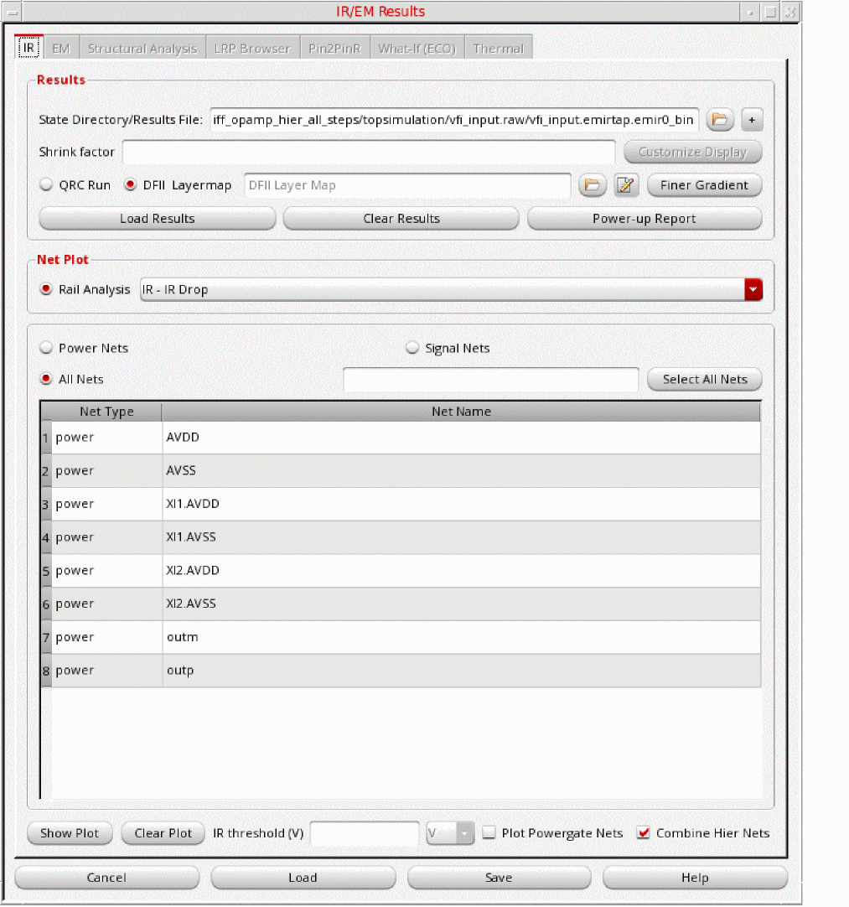

15
Hierarchical EMIR Analysis
- Hierarchical EMIR Analysis in Voltus-Fi-XL
- The High-Level Flow
- Compatible Software Versions
- Data Requirements for the Hierarchical EMIR Flow
- Types of Block-Level xDSPF – Detailed, Port, and Via Snapped
- PWL Current Files for Top-Level Simulation
- Hierarchical EMIR Analysis Flow in GUI Mode
- The Hierarchical EMIR Analysis Batch Mode Flow
- The Hierarchical EMIR Analysis Batch Mode Automation Flow
- Analyzing the EMIR Results for Hierarchical Analysis
- Sample File Formats for Hierarchical EMIR analysis
Hierarchical EMIR Analysis in Voltus-Fi-XL
Voltus-Fi is used for transistor-level power-integrity analysis that includes simulation and EM and IR drop (EMIR) analysis for transistor designs captured in the xDSPF netlist extracted from the layout. The target designs include analog, analog/mixed-signal (AMS), and custom digital designs of large sizes that are created using Virtuoso.
In the current scenario, shrinking geometries and increasing design complexities have increased the probability of chip failures if the designs are not accurately analyzed for either EM or IR problems.
The increase in the size of the designs, to include several million instances and an even larger number of nodes, might result in exceeding the simulation capacity required to solve the complete design. In such scenarios, it is imperative to apply an hierarchical approach to simulate these designs.
Hierarchical analysis is useful for simulating large top-level designs that have multiple levels. Flat simulation and analysis of such designs uses a lot of space and increases the run time tremendously.
The Voltus-Fi Hierarchical EMIR flow enables the hierarchical signoff for AoT (Analog on Top) designs with a cockpit that is fully integrated within Virtuoso, similar to the flat Voltus-Fi EMIR flow. The Hierarchical analysis results are displayed on the Virtuoso layout with all the features and capabilities of flat Voltus-Fi EMIR analysis.
The Voltus-Fi hierarchical EMIR flow has the following advantages:
- Lets you analyze and fix EMIR violations for the block and top-level of the design, together and separately.
- Provides a single interface for the complete hierarchical analysis.
- Provides flexibility to choose either port, detailed, or reduced models of blocks to be used for top-level signoff.
- Provides high performance and high simulation capacity as compared to the flat flow with comparable accuracy – EMIR signoff for large designs.
- Provides support for multiple ports as blocks.
The High-Level Flow
The integrated hierarchical EMIR flow involves Quantus, MMSIM, and Voltus-Fi working in an integrated manner.
Following are the key features of this flow:
- The PGVs (power grid-views) are leveraged to create a model of the block to enable the hierarchical EMIR flow within Voltus-Fi.
- The PGVs and a block-level xDSPF file is written out.
- Extraction is performed using Quantus and the block PGVs are used to connect from the top level to the block level. The output is a top-level xDSPF file.
- Multi-mode simulation (MMSIM) is performed using Spectre® Accelerated Parallel Simulator (APS)/eXtensive Partitioned Simulator (XPS) to process the top-level xDSPF with the block-level xDSPF.
- The top-level and block-level EMIR analysis results are analyzed in Voltus-Fi and the plots are displayed on the Virtuoso layout.
This following diagram illustrates the above flow.
Figure 15-1 The High-Level Flow
The Voltus-Fi Hierarchical EMIR flow uses the extraction and simulation tools in the flow and the Voltus-Fi cockpit drives the flow. The sequence of steps in the Hierarchical flow within Voltus-Fi are listed below.
- Generating block-level PGVs and block-level xDSPF
- Running Quantus for generating the top-level xDSPF
- Running top-level simulation using both block-level and top-level xDSPF files
- Displaying the EMIR plots for top and block levels and analyzing the results
The above steps are detailed in subsequent sections of this document. The following diagram illustrates the above flow.
Figure 15-2 The Hierarchical EMIR Flow in Voltus-Fi
Compatible Software Versions
The following software versions are recommended for the hierarchical flow:
- Voltus-Fi-XL 6.1.7 ISR or ICADV123 ISR latest version
- MMSIM 15.1.0 latest version
- EXT 16.1.1 latest version
Data Requirements for the Hierarchical EMIR Flow
To run the hierarchical EMIR flow, ensure that the following inputs are available:
- All inputs for generating PGVs for the blocks. For details, see Data Requirements and Flow for PGV Creation in the “Power-Grid View Generation” chapter. In addition, for the hierarchical flow, provide the following:
-
All inputs required for embedded extraction flow in Voltus-Fi. Ensure the following:
- The Quantus hierarchy is available because the software calls the Quantus binary from this path.
-
The Pegasus, PVS, or Calibre® run is performed with the “lvs black box” option to generate the Pegasus, PVS, or Calibre database, which is the input database for generating the xDSPF file using Quantus.
- The PGV binary database is available.
- Inputs required for top-level simulation.
Types of Block-Level xDSPF – Detailed, Port, and Via Snapped
In the hierarchical flow, block-level xDSPF is generated from the PGVs.
The PGVs contain the complete RC grid for all the power nets and their node locations and current taps, which can be written in the xDSPF format. However, the complete RC grid may not be required for all the blocks, so you can choose to create the xDSPF for a block to include only a specific type of information. The following options are available:
-
Detailed xDSPF: Includes the complete RC grid information for the blocks. The current taps are on the device locations of the original block. The xDSPF subcircuit name is
<BlockName>_Detailed. -
Port xDSPF: Includes the port model information for all the interface nodes but does not include the RC grid information. The current taps are at the interface locations, and the xDSPF subcircuit name is
<BlockName>_Port. -
ViaLayer/MetalLayer/<LayerName>: Includes the RC grid information only for the layers above the specified layer. However, the capacitance and currents of all the layers below the specified layer will be distributed on the specified layer. The xDSPF subcircuit name is
<BlockName>_<LayerName>.
The name of the layer above which the RC information should be included in the via layer xDSPF that is generated is specified in the GUI by using the Stop Layer field in the Create Power Grid Views form. In batch mode, it is provided by specifying the -hier_flow_stop_layer layer_name parameter of the create_pgv command.
For example, if via1 is specified as the stop layer, then the power grids of all the layers below via1 will be removed from the xDSPF file and their capacitance and the currents will be distributed either on via1 or the layers above it.
PWL Current Files for Top-Level Simulation
For the top-level simulation in the hierarchical flow, block currents are specified using PWL files. These files are generated while running the block simulation.
Figure 15-3 Block-Level Simulation PWL Generation
The PWL files include the following information:
- Tap device and terminal name
- Subckt port PWL current
- Tap device PWL current
- Average resistance and capacitance for tap device
- Time-varying always-on resistance (Ron) for power-gated designs
The PWL files are written using the following keyword in the EMIR configuration file:
eisopt save_tapi=<designName.tapi>
Hierarchical EMIR Analysis Flow in GUI Mode
The hierarchical EMIR flow in Voltus-Fi-XL enables the hierarchical signoff for the Analog on Top (AoT) designs with a cockpit that is fully integrated within Virtuoso. Voltus-Fi-XL supports the hierarchical EMIR flow in both GUI and batch modes. The flow in the GUI mode comprises the following steps:
- Opening the Hierarchical EMIR Forms
- Creating the Block PGVs and xDSPF
- Generating the Top-Level xDSPF File
- Running the Top-Level Simulation
Opening the Hierarchical EMIR Forms
To start the hierarchical EMIR flow, you need to open the three related forms: Create Power Grid Views, Extract xDSPF, and Hierarchical Top Simulation. To open these forms, perform the following step.
Creating the Block PGVs and xDSPF
As a first step in the hierarchical flow within Voltus-Fi, block-level PGVs and xDSPF files are generated. In the GUI, the Create Power Grid Views form of Voltus-Fi is enhanced to specify the options for the hierarchical flow.
In batch mode, the set_mmsim_pgv_nets command is used to specify the nets for which you want to create PGVs, and the create_pgv command is enhanced to specify the settings for the hierarchical flow. The GUI use model is detailed below.
In the Hierarchical EMIR menu, click the Block Power Grid View Generation submenu. The Create Power Grid Views form opens.
Figure 15-4 The Create Power Grid Views Form
In this form, you can provide the information detailed below.
-
Specify the OA Libs, which is the name of the open access (OA) database library.
- Specify the Macro Name, which is the top cell name.
- Specify the Library Name, which is the name of the library. This option is used to create a library with a name different than that of the macro. By default, a library is created with the same name as that of the macro.
- Specify the Extraction Tech File, which provides the name of the technology file used for reading the technology data.
-
Specify the Tech Lef File, which includes the library exchange format (LEF) information for the technology data.
-
Specify the Macro Lef File, which includes the LEF information for the design.
Note:
-
Specify the Lef Def Layer Map File, which provides the mapping between LEF layer names and technology layer names. If the lef def layer map file is not specified, the software automatically generates this file. For details, see Automatic Generation of Layer Map Files in the “Power-Grid View Generation” chapter.
-
Specify the power-grid database or the PGDB Layer Map File, which provides the mapping between the xDSPF layer names that are written in the simulation database, and the technology layer names.
Note:
- If an xDSPF layer name is missing in this file, the PGVs will not contain data for that layer.
- If the PGDB layer map file is not specified, the software automatically generates this file.
For details, see Automatic Generation of Layer Map Files in the “Power-Grid View Generation” chapter.
For more information about the LEF layer map file and PGDB layer map file formats, see LEF layer Map File and PGDB layer Map File in the “File Formats” chapter.
The Tech Lef File, the Macro Lef File, the Lef Def Layer Map File, and the PGDB Layer Map File can be created and edited using the edit buttons provided against each of these fields. -
Specify the Simulation Directory. For the hierarchical flow, the simulation directory may or may not contain the current (
*.ptiavg) files. -
Specify the Simulation Prefix, which is the prefix used for creating an instance while performing the simulation. The prefix is specified along with the hierarchy separator. This input is optional.
For example, you can specify “XO.”or “IO.”.In these examples,“XO”or“IO”are prefixesand “.”is the hierarchy separator. You can check the prefix used during simulation in your simulator input file. -
Specify the UTI Ron File that is generated by Spectre. This file contains multiple on-resistance (Ron) values – minimum, maximum, and average – for powergates. A sample file is shown below:
D-Term-Net S-Term-Net Ron_avg(Ohm) Ron_max(Ohm) Ron_min(Ohm) Power-Gate
outp VDD 1268.34 1302.38 1230.52 MPM3
outp VDD 1268.03 1302.06 1230.2 MPM3@39
outp VDD 1268 1302.04 1230.18 MPM3@40
outp VDD 1268.03 1302.07 1230.21 MPM3@41
If this file is not specified, Voltus-Fi uses theRonvalues from the Spectre simulation database (*.emir#_binfile). - Specify the Trigger File, which is a text file that is used during a dynamic current simulation to run a detailed analysis for determining the distribution of current. For detailed information about the trigger file format and contents, see Format and Contents of Trigger File in the “File Formats” chapter.
- The Hierarchical Flow xDSPF generation option is selected by default. This option enables the hierarchical EMIR analysis.
- Specify the Stop Layer to specify the layer for creating a snapped via layer xDSPF. When the stop layer name is specified, the RC grid for all the layers below the specified layer will not be included in the xDSPF file that is generated for the block.
-
Specify the Sub Node Char that will be used as the subnode identification. By default,
#is specified. - Specify the Net Name and the corresponding Voltage.
-
Specify the State Directory/Results File, which is the simulation result file. The naming convention of the simulation result file is,
*.emir#_bin. - The table below is populated with the information about the specified Net Name, Voltage, and EMIR Results DB File.
- In the Output group box, specify the Results Directory, which is the output directory for the PGVs. By default, the PGVs are stored in the work directory.
Generating the Top-Level xDSPF File
Once the block PGVs and xDSPF files are generated, the next step involves performing extraction using the embedded Quantus flow of Voltus-Fi and generating the top-level xDSPF file.
In the GUI, the Extract xDSPF form of Voltus-Fi is enhanced to specify the options for the hierarchical flow.
In batch mode, the command is enhanced to include the settings for the hierarchical flow. The GUI use model is detailed below.
In the Hierarchical EMIR menu, select Extract Top DSPF. The Extract xDSPF form opens.
Figure 15-5 The Extract xDSPF Form
In this form, you can provide the information detailed below.
-
For Data Type, select either PVS/Pegasus or Calibre. This specifies whether the input data will come from Pegasus or Calibre. By default, PVS/Pegasus is selected.
- Specify the Data Directory, which is the svdb directory created with lvs black box option, that provides the path to the directory in which the input data is stored.
- Specify the Run Name, which is the name of the Pegasus or Calibre run.
- Specify the Post Processing Script, which is the name of the post-processing script file.
- Specify the Foundry / Process Node. The following options are available:
-
Select Signal EM to specify that signal nets should be included in the xDSPF file. When Signal EM is selected, the following command is added to the Quantus command file or the common command language (CCL) file, to perform decoupled RC extraction
(rc_decoupled)for all nets.Inrc_decoupledextraction, an RC network for the specified net(s) with both parasitic resistance and capacitance decoupled to ground is extracted.extract \ -selection "all" \ -type "rc_decoupled"
When Signal EM is not selected, you need to provide the names of the power or ground nets on whichrc_decoupledextraction will be performed. For all other nets,c_only_decoupledextraction is performed.InFor example, when the following command is specified,c_only_decoupledextraction, only parasitic capacitance between the specified nets and adjacent nets decoupled to the specified cap ground is extracted.c_only_decoupledextraction is performed on all nets:extract \
-selection "all" \
-type "c_only_decoupled"
When the following command is specified,rc_decoupledextraction is performed on nets specified in thevfiQrc_netsfile. For all other nets,c_only_decoupledextraction is performed.extract \
-selection "nets_file ./vfiQrc_nets"
-type "rc_decoupled"
- Specify PG Net(s) or the power and ground nets that should be included in the xDSPF file. This option is specified only when the Signal EM option is not selected. If the Signal EM option is not selected and PG Nets are not provided, a pop-up window opens asking for the list of PG Nets.
- Specify the Nets File that contains the names of the nets to be included in extraction. When the Nets File option is checked, the Signal EM and PG Net(s) options will be ignored.
- The Hierarchical EMIR flow check box is selected by default. This option enables hierarchical EMIR analysis.
-
Specify the PGV Library Name, which is the block PGV library name that is generated in the first step and used for the block-level extraction performed for the hierarchical flow.
- In the Extraction Type cyclic field, specify one of the following:
- In the Cap Coupling Model cyclic field, select one of the following:
- Select Parasitic RES Color to enable color-aware EM analysis.
- Select Compression to generate the xDSPF in a compressed format.
-
Select Reduce I-Cards to enable the
reduce_i_cardsoption in the CCL file that is used for generating the xDSPF file. If a net is capacitance only, it is qualified for reduced I card or instance card treatment. This means the I cards and the corresponding dummy resistors are not printed in the results. - Select Comment Sub Ckt to comment out the top subcircuit statements from the xDSPF file.
- Select Sub Conductor Model to specify the parasitic resistor models for the subconductor layers that should be included during extraction. This is used to support different EM rules for poly layers during EM analysis.
- Select Filter RES Center to include sub-nodes after eliminating resistors with small resistance values. When this option is selected, the survivor sub-nodes, among a group of sub-nodes that are formed by the filtered resistors, are chosen based on their proximity to the geometric center of the group. This field is specific to process nodes 5nm and below.
-
Select Filter RES By Layer to specify the LVS layer name for which the minimum resistance value for the extracted parasitic resistors is to be applied. If the layer name is not specified, the default value,
RH_TN_6 0, is used. This field is specific to process nodes 5nm and below. -
Specify the Ref Node or the reference node on which the extraction is to be performed. By default,
0is specified. -
Specify the Sub-Node Char that will be used as subnode identification. By default,
#is specified. - Specify the Fracture Via Count that will be used to divide pseudo vias into segments during extraction.
-
Specify the Via Array Spacing, which is the distance, a floating point micron value that will be used as the maximum distance criteria for grouping vias within the same array. This means that if the distance between vias is less than the specified maximum distance, they are grouped within the same array. The default value of the via array spacing is 0.35 times the via size for N10, N16, N12, and N20 processes. For other processes, the default is auto, in which case the software sets the via spacing automatically.
Use this option to specify a value other than the default value of 0.35. -
Specify the Via Array Count number, without the per via layer count option, which is the number of vias per side allowed in an array. The default value is 4. For example, if the via array count is set to 2, the number of vias allowed per array side will be 2.
- From the list, either specify the Technology Library File that provides the path of the technology file to be used for reading the technology data, or the name of the Technology Directory that contains the technology file.
- Specify the Technology Name, which is the technology filename to be used for extraction. This field is optional if the technology directory has been specified.
- Specify the Corner, which is the name of the technology corner to be picked from the library.
-
Specify the Temperature at which the extraction will be performed. By default, a temperature of 25 degree Celsius is used. The temperature specified for extraction is optional. The options, temperature and
temp_coeff, specified in the CCL file are mutually exclusive. The following scenarios hold true.-
If you specify a temperature for extraction in the Extract xDSPF form, or by using the
-temperatureparameter of theextract_xdspfcommand in batch mode, the following option in the CCL file will be set tofalse:-include_parasitic_res_temp_coeff "false" \
The software displays the following message:User specified temperature will be used for extraction. The option -include_parasitic_res_temp_coeff will be set to false. -
If the temperature is not specified for extraction, the following option in the CCL file will be set to
true:-include_parasitic_res_temp_coeff "true" \
The software displays the following message:No user specified temperature value so the option -include_parasitic_res_temp_coeff will be set to true.
-
If you specify a temperature for extraction in the Extract xDSPF form, or by using the
- Specify the number of CPUs to be used during the Quantus extraction run in the No of CPUs field.
-
Specify the SubCkt Pin Order File to provide the order of pins to be used during extraction. The pin order is specified in the xDSPF file using the
.SUBCKTand.ENDSstatements. By default, for the hierarchical flow, the software uses the pin order file for blocks from the PGV directory. You can use this option to provide a file with a different pin order that will override the order specified using the default.SUBCKTstatement in the xDSPF file.
Below are examples of pin orders in the xDSPF file before and after specifying the pin order file.
Without the sub-circuit pin order file.SUBCKT top In_001 VDD Out_001 VSS In_002 Out_002 In_003 Out_004 ...
.ENDS
With the sub-circuit pin order file.SUBCKT top VDD VSS In_001 Out_001 In_002 Out_002 In_003 Out_004 ...
.ENDS
-
Specify the Customized Extract Commands File to specify the file with user-customized extract commands. When this file is specified, the Voltus-Fi-generated CCL will not have any extract commands, and the commands from the customized extract commands file will be added in the Voltus-Fi-generated CCL.
A sample customized extract commands file is as follows:extract \
-selection "all" \
-type "rc_coupled"
extract \
-selection nets_file "file.txt" \
-type "none"
-
Select Add Extract Command if you want Voltus-Fi to add the extract commands to the CCL file.
By default, when acustomextractfile is specified, all commands, including the extract commands, from that file are added to the Voltus-Fi-generated CCL file. However, when you select Add Extract Command, Voltus-Fi adds the extract commands to the CCL file, and all other commands specified in thecustomextractfile are added to the CCL file. - Specify the Parasitic blocking device cells file to specify the file containing parasitic blocking device cell names, if any. Once a cell is declared as a blocking cell, all the parasitic RCs inside the cell are not extracted. If the cell content overlaps top cell routing, then the top cell routing's RCs in the overlapping regions are also not extracted.
- Specify the Directory, which is the output directory in which the xDSPF file will be saved. If this file is not specified, a pop-up window opens asking for the name of the directory.
-
Specify the name of the xDSPF file that will be generated. If the filename is not specified, the software generates a file with the name,
<runName>.dspf, by default. -
Select Autorun Spfchecker to automatically run the SPF Checker utility after the extraction run. SPF Checker checks the syntax of the DSPF/SPEF followed by opening the output log. It also compares the terminal names in the DSPF and the device models and populates the summary section with the recommended mapping statements or the
spf aliastermstatements.
This check box is selected by default.
Note:
-
Click Generate CCL to create the CCL or the Quantus command file that will be used to run Quantus. By default,
vfiQuantus-<cellname>.cclis created and the file opens in the Voltus-Fi console. You can view the file and modify it, if required. -
Click Generate and Run to create the CCL file and run Quantus to create the xDSPF file in a single step. This is useful when you do not want to view the CCL file before running Quantus.
Note:
-
When you click Generate and Run, Voltus-Fi creates a file,
.vfiExtractDSPFGuiLastto save the form settings. This file gets loaded automatically when the next session starts. If you do not want to load these settings, remove this file before starting the session. This file is created along withcds.lib. -
The values specified in the
.cdsinitfile override the values of the.vfiExtractDSPFGuiLastfile of the previous session.
-
When you click Generate and Run, Voltus-Fi creates a file,
-
Click Run to select the CCL file to use for running Quantus. This is useful if you have modified the auto-generated CCL file in the previous step. The log is saved both in the
vfiQuantus.logand on the Voltus-Fi console.
ThevfiQuantus-<cellname>.logfile stores all the CCL commands and the info, warning, and error messages issued by Voltus-Fi during the extraction run. It is saved in the specified output directory.
With every successive extraction run, the name of the log file is updated tovfiQuantus-<cellname>.log.(n-1). Here, n-1 is the run number. Therefore, the greater the numeric value in the filename, the more recent or latest that file is.
For example, after three extraction runs, the following log files are created:-
vfiQuantus-<cellname>.log(log file for the first run) -
vfiQuantus-<cellname>.log.1(log file for the second run) -
vfiQuantus-<cellname>.log.2(log file for the latest run)
For information about the format of the Voltus-Fi-generated CCL file and its example, see Common Command Language (CCL) File in the “File Formats” chapter. -
- Click Reset if you want to revert to the default values.
Running the Top-Level Simulation
Once the block-level PGVs are generated and top-level xDSPF is created, the next step is performing the top-level simulation. In this step, the top-level xDSPF generated by Quantus is processed along with the block-level xDSPF generated by VFI-LibGen to perform simulation.
In the GUI, the Hierarchical Top Simulation form is provided to specify the options for the hierarchical flow.
In batch mode, two commands, set_block_data and run_top_simulation are provided to specify the settings for the hierarchical flow. The GUI use model is detailed below.
In the Hierarchical EMIR menu, click the Top Simulation submenu. The Hierarchical Top Simulation form opens.
Figure 15-6 The Hierarchical Top Simulation Form
In the Block group box, specify the following:
-
In the xDSPF Type box, specify the type of xDSPF to be used from the PGV directory. You can choose from the following options:
- Detailed: to select the detailed block xDSPF file
- Port: to select the port block xDSPF file
- Via Snapped: to select the via layer xDSPF generated using via layer snapping. For details, see Types of Block-Level xDSPF – Detailed, Port, and Via Snapped
- Specify the PGV dir for the block xDSPF file.
- In the Instance(s) field, specify the instance name of the block. For multiple instances of the same block that use the same current file, specify the instances separated by a space.
- In the Current Type list box, specify whether the current analysis will be Static or Dynamic. By default, Dynamic is selected.
- Specify the path to the Current File. This is a PWL file. For details of the file contents and how to generate the PWL files, see PWL Current Files for Top-Level Simulation.
- Click Add Block to add the block data specified above to the table.
- Click Add Block Instance to add another instance to the already added block with a different current file.
- Click Remove to remove any block data from the table.
In the Top group box, specify the following:
- Specify the top-level xDSPF File generated in the previous step.
- Specify the input Ckt File with models/vectors and other parameters for top-level simulation.
-
Select the Bus Bit Char from the options,
<>,[], and{}available in the cyclic field. The default character is<>.
In the EMIR Config file group box, specify the following:
- Specify an existing EMIR configuration file or generate an EMIR config file. To specify an existing file, click the Browse button and select the file. For generating the EMIR config file, specify the following options:
-
Specify the Results Directory to store the results of the top-level simulation. The default directory is
vfitop. - Click Run to run the top-level simulation.
The Hierarchical EMIR Analysis Batch Mode Flow
The following commands are provided for performing the Hierarchical EMIR analysis flow.
- The following commands are used to create block PGVs in batch mode:
- The following command is used to generate top-level xDSPF in batch mode:
- The following commands are used to run top-level simulation in batch mode:
set_mmsim_pgv_nets
set_mmsim_pgv_nets -netnet_name-voltagevoltage_value-voltage_source_netsvoltage_source_only_nets-results_fileresult_file_name[-prefixprefix_name][-feedthru_nets {net1 net2 net#}]
Specifies the nets for which you want to create PGVs in the Spectre flow. You can use this command to specify multiple PGV nets at a time.
set_mmsim_pgv_nets \
-net { AVDD AVSS Ibias inm inp outm outp } \
-voltage { 1.3 0 0 0 0 0 0 } \
-results_file psf/input.emir0_bin \
-prefix I0
For detailed information about the parameters of this command, see set_mmsim_pgv_nets in the “Batch Mode Execution” chapter.
create_pgv
create_pgv -macro_namemacro_name[-lib_namename_of_library] [-hier_flow {true | false}] [-hier_flow_stop_layerlayer_name] [-disable_signal_pgdb {true | false}] [-stop_on_missing_lef_pins {true | false}] [-libgen_cmd_filecmd_file_name] [-libgen_pathlibgen_binary_path] -tech_filetech_file_name[-tech_lef_filetech_lef_file_name]-type {static | dynamic} [-macro_lef_filemacro_lef_file_name] -sim_dirsimulation_dir[-lef_layer_maplef_layer_map_file_name][-oa_liblist_of_OA_libraries] -pgdb_layer_mappgdb_layermap_file_name[-pgdb_versionversion_number][-trigger_filetrigger_file_name] [-output_directorydirectory] [-uti_Ron_fileRon_report_file_dumped_by_Spectre] [-create_no_device_nets true | false] [-powergate_state_flow true | false] [-use_pwl_files true | false] [-map_connectivity_layers true | false] [-unitsvalue]
Creates PGVs. The PGVs contain information about the power ports of a transistor or block, the internal power grid, and the tap current distribution within a transistor or block.
Parameters
Example
The following command is used to create power-grid views for hierarchical EMIR analysis:
create_pgv \
-macro_name DiffOpAmp \
-tech_file typical_unified/qrcTechFile \
-tech_lef_file PGV_gen_setup/LEF/gsclib045_tech.lef \
-type dynamic \
-macro_lef_file ./DiffOpAmp_multiAVDD.lef \
-sim_dir ./ \
-lef_layer_map PGV_gen_setup/lefdef.map \
-pgdb_layer_map PGV_gen_setup/pgdb.map \
-output_directory vfi_pgv_hier \
-hier_flow true \
-hier_flow_stop_layer Via1 \
-libgen_cmd_file mylibgen.cmd \
-libgen_path ../voltus_libgen
extract_xdspf
extract_xdspf
-signalEM {true | false}
[-PGNets list_of_pg_nets]
-process {n7 | n10pg | n10 | n20 | n16 | n12 | others}
-techDir tech_dir_name | -techLib tech_lib_file_name
[-techName technology_name]
[-techCorner technology_corner_name]
[-temperature value]
-inputType {pegasus | pvs | calibre}
-inputDir input_dir_name
-RunName input_run_name
-outputDir output_dir_name
[-hier_flow {true | false}]
[-hier_flow_pgv {1.cl 2.cl}]
[-outputDspf output_dspf_filename]
[-output_xy_generic {true | false}]
[-coloring {true | false}]
[-subcktPinOrder pin_order_file]
[-multiCpu number_of_cpus]
[-customExtract extract_Commands_File]
[-groundNet ground_net_name]
[-blockingCellFile parasitic_blocking_device_cell_names_file]
[-subNodeChar sub_node_char]
[-compression {true | false}]
[-reduction {true | false}]
[-commentSubCkt {true | false}]
[-subConductorModel {true | false}]
[-fractureViaCnt via_count_number]
[-arrayViaSpacing {auto | value}]
[-lic_queue timeout_in_seconds]
[-generate_ccl_only {true | false}]
[-user_ccl_file ccl_file_name]
[-bus_bit_char string]
[-tech_cmd_file filename]
[-tech_layer_setup_file filename]
[-icell_map_file filename]
[-keep_pin_shorting_res {true | false}]
[-keep_pin_shorting_res_by_layer {"layer1" "layer2" .... }]
Generates the xDSPF file using Quantus from within Voltus-Fi.
Parameters
|
When set to |
|
|
Specifies the names of the PGV files ( |
Examples
-
The following command is used to run the hierarchical flow using the
DiffOpAmp.clPGV file:extract_xdspf -signalEM true \ -process n20 \ -techLib ../pvtech.lib \ -techName gpdk045 \ -techCorner "rcx_typical" \ -inputType pegasus \ -inputDir ./svdb \ -RunName DiffOpAmp_top_2subblock_VSSport \ -outputdir vfi_quantus_top \ -temperature 25 \ -hier_flow true \ -hier_flow_pgv DiffOpAmp.cl \ -subcktPinOrder pin_order_file \ -groundNet AVSS \ -reduction true
set_block_data
set_block_data -dspfblock_dspf_filename-instance {XI1 XI2 ...} [-current_type {static | dynamic}] -current_filecurrent_filename
Specifies the block data information to be used in the top-level simulation.
Parameters
|
Specifies the name of the block xDSPF file to be used. This is a required parameter. |
|
|
Specifies the instance names of the child cells. For multiple instances of the same block that use the same current file, specify the names separated by a space. |
|
|
Specifies whether the current analysis type will be static or dynamic. |
|
|
Specifies the current file to be used. This is a PWL file. for details of the file and how to create it, see PWL Current Files for Top-Level Simulation. |
|
Examples
-
Use the following command to specify the same PWL file for all instances:
set_block_data -dspf DiffOpAmp_detailed.dspf -instance {XI1 XI2} -current_type dynamic -current_file DiffOpAmp.pwl
-
Use the following command to specify a different pwl file for each instance:
set_block_data -dspf DiffOpAmp_detailed.dspf -instance {XI1 XI2} -current_type dynamic -current_file {DiffOpAmp.pwl DiffOpAmp.pwl}
-
Use the following command to specify the static current for a block:
set_block_data -dspf DiffOpAmp_detailed.dspf -instance {XI1 XI2} -current_type static -current_file block_i.txt
-
Use the following command to use the via snapped xDSPF:
set_block_data -dspf DiffOpAmp_vialayer.dspf -instance {XI1 XI2} -current_type dynamic -current_file DiffOpAmp.pwl
run_top_simulation
run_top_simulation-cktfileinput_ckt_file[-dspftop_dspf_file] [-bus_bit_char bus_bit_char][-emir_conf_fileemir_config_file] [-generate_cmd_only {true | false}] [-output_directoryoutput dir] [-overwrite_cmd_files {true | false}] [-sim_switches "sim_cmd_line_options"] [-use_config_file_flow {true | false}]
Specifies the information to be used for performing the top-level simulation.
Parameters
Example
Use the following command to run the top-level simulation using the top-level xDSPF file, VSSport.dspf:
run_top_simulation -dspf DiffOpAmp_top_2subblock_VSSport.dspf -cktfile input.ckt -bus_bit_char <> -emir_conf_file emir.conf -output_directory topsimvfi
The Hierarchical EMIR Analysis Batch Mode Automation Flow
The hierarchical EMIR analysis flow in Voltus-Fi detailed in the above document is automated for the convenience of the user. The subsequent sections provide details of batch mode automation flow.
- Block PGV Generation
- Block PGV Inputs for Top-Level Extraction and Simulation
- The Top-Level Extraction and Simulation Run
- Multi-Mode Support
Block PGV Generation
In this step, block PGVs are generated using either batch commands or the GUI. Once a block PGV is created, the PGV run directory stores all the data needed for both the top-level Quantus and the top-level simulation runs.
In addition to the.cl files, the DSPF files and port_order files, and the PWL files from block simulation, are copied in the PGV run directory.
The PWL or current file for a block PGV is picked automatically from parsing the block emir.conf file, which has the name of the PWL created using the following option:
eisopt save_tapi=<pwl file name>
The PGV run directory includes the following data:
-
The
cell.clfile, which is the PGV binary database - Block cell DSPF files for all modes (detailed, port, and snapped).
- The port_order file
- The block current/PWL file
Block PGV Inputs for Top-Level Extraction and Simulation
Once all the block PGVs are created, create a list of all the PGV directories and provide that as input for next step. This is done in a simple text file that contains the paths for each block PGV.
The set_pgv command is used to provide all the details of the block-level data to be used for the top-level extraction and simulation runs.
set_pgv
set_pgv -moduleblock_name-pgv_dirpgv_run_dir[-dspfdspf_file] [-delayvalue] [-repeatvalue] [-instancesinstance_list] [-view {snapped | detailed | port}] [-pwl {pwl_file1 pwl_file2...}]
Specifies the information to be used from the block PGV and xDSPF generation step for the top-level Quantus and simulation runs.
Parameters
|
Specifies the value by which to delay the PWL file content. This value can be either positive or negative. This is an optional parameter. The default delay value is 0. |
|
|
Specifies the block-level xDSPF file to be used for top-level extraction and simulation. This is an optional parameter. By default the tool uses the xDSPF file stored in the PGV run directory. |
|
|
Specifies the list of instances for which you want to specify the PWL file. This is an optional parameter. By default, all the instances of the module use the PWL file stored in PGV run directory. |
|
|
Specifies the name of the PGV run directory that contains the |
|
|
Specifies the PWL files to be used for top-level simulation. You can specify a single PWL file to be used for all instances or for the instances specified using the You can also specify multiple PWL files for different instances of a block. For details, see Multi-Mode Support. This is an optional parameter. By default, the software uses the PWL file stored in the PGV run directory. |
|
|
Specifies the number of times the PWL content should be repeated. This value is always positive. This is an optional parameter. The default value of this parameter is 1, which means the PWL content is used only once. |
|
|
Specifies the type of block-level xDSPF file to be used for top-level simulation. The following options are available:
|
|
Examples
-
The following command picks up the detailed DSPF and PWL from the
pgv_dir, vfi_pgv_hier and applies it to all the instances.set_pgv -module DiffOpAmp -pgv_dir ./blockPGV/vfi_pgv_hier
-
The following command picks up the detailed DSPF and PWL from the
pgv_dir, vfi_pgv_hier, applies it to all the instances and delays the PWL content by5n.set_pgv -module DiffOpAmp -pgv_dir ./blockPGV/vfi_pgv_hier -delay 5n
-
The following command picks up the via layer snapped DSPF and PWL from the
pgv_dir, vfi_pgv_hier.via and applies it to all the instances.set_pgv -module DiffOpAmp -pgv_dir ./blockPGV/vfi_pgv_hier.via -view snapped
-
The following command specifies the PWL, DiffOpAmp.pwl, for instance,
X1. For all other instances for the same block, the PWL stored in pgv_dir, vfi_pgv_hier.via, is used.set_pgv -module DiffOpAmp -pgv_dir ./blockPGV/vfi_pgv_hier.via -instances {XI1 } -pwl {blockSim/psf/input.emirtap/DiffOpAmp.pwl}
-
The following commands provide the block-level data for different blocks, block 1 and block 2:
set_pgv -module block1 -pgv_dir ./block1PGV/vfi_pgv_hier1 set_pgv -module block2 -pgv_dir ./block2PGV/vfi_pgv_hier2
The Top-Level Extraction and Simulation Run
The top-level extraction run and the simulation run is a single-run process that takes the following as input:
-
A list of block PGVs specified using the
set_pgvcommand as detailed in the previous section. - The Voltus-Fi extract_xdspf command inputs such as Pegasus/PVS/Calibre directory and technology files and so on. This is similar to block embedded Quantus flow with no additional input.
- Simulation inputs specified using the run_top_simulation command. These inputs include the input circuit file containing models, input vectors, and so on for the top-level simulation run.
Voltus-Fi uses the PGV list to create a merged .cl file for the top-level Quantus run. Once the top-level Quantus run is successful, the xDSPF is parsed to map the block instances with the xDSPF and PWL files.
While running the above, the tool uses the automation commands to create the following internal command files for extraction and simulation.
These command files can be used for debugging, to verify that data is picked correctly. If needed, the command files can be used to run a specific step.
Multi-Mode Support
The multi-mode support means that the hierarchical flow supports the use of different PWL files for different instances of a block.
Use the -pwl parameter of the set_pgv command to override the default PWL file for any instance with a different PWL file. This feature eliminates the need to specify or keep data for multiple modes in the PGV because the PGV and block xDSPF do not have any dependency on the current data stored in the PWL.
set_pgv
-module DiffOpAmp
-pgv_dir ./blockPGV/vfi_pgv_hier.via
-instances {XI1 XI2}
-pwl {blockSimMode1/psf/input.emirtap/DiffOpAmp.pwl blockSimMode2/psf/input.emirtap/DiffOpAmp.pwl}
A Sample Script for Automated Batch Mode Flow
Following are sample scripts for three different scenarios of the automated hierarchical EMIR analysis flow.
Sample 1: Using a detailed xDSPF file
In the script sample below, a vpsbatch_automate.cmd is run and the block-level PGV data is picked from the vfi_pgv_hier directory.
vpsbatch -cmd vpsbatch_automate.cmd
the vpsbatch_automate.cmd includes the following information:
include blockpgv.txt
extract_xdspf -signalEM true \
-process n20 \
-techLib ./pvtech.lib -techName gpdk045 -techCorner "rcx_typical" \
-inputType pegasus -inputDir topQRC/svdb -RunName DiffOpAmp_top_2subblock_VSSport \
-temperature 25 \
-groundNet AVSS
run_top_simulation -cktfile topSim/input.ckt -emir_conf_file topSim/emir.conf
The blockpgv.txt file contains the following information:
set_pgv -module DiffOpAmp -pgv_dir ./blockPGV/vfi_pgv_hier
Sample 2: Using a snapped xDSPF file
In the script sample below, a vpsbatch_automate_vialayer.cmd is run and the block-level PGV data is picked from the vfi_pgv_hier.via directory.
vpsbatch -cmd vpsbatch_automate_vialayer.cmd
the vpsbatch_automate_vialayer.cmd includes the following information:
include blockpgv_vialayer.txt
extract_xdspf -signalEM true \
-process n20 \
-techLib ./pvtech.lib -techName gpdk045 -techCorner "rcx_typical" \
-inputType pegasus -inputDir topQRC/svdb -RunName DiffOpAmp_top_2subblock_VSSport \
-temperature 25 \
-groundNet AVSS
run_top_simulation -cktfile topSim/input.ckt -emir_conf_file topSim/emir.conf
The blockpgv_vialayer.txt file contains the following information:
set_pgv -module DiffOpAmp -pgv_dir ./blockPGV/vfi_pgv_hier.via -view snapped
Sample 3: Specifying the PWL file
In the script sample below, user-specified PWL file, DiffOpAmp.pwl is used instead of the default PWL file in the pgv_dir. The vpsbatch_automate_pwl.cmd is run and the block-level PGV data is picked from the vfi_pgv_hier.via directory.
vpsbatch -cmd vpsbatch_automate_pwl.cmd
the vpsbatch_automate_pwl.cmd includes the following information:
include blockpgv_pwl.txt
extract_xdspf -signalEM true \
-process n20 \
-techLib ./pvtech.lib -techName gpdk045 -techCorner "rcx_typical" \
-inputType pegasus -inputDir topQRC/svdb -RunName DiffOpAmp_top_2subblock_VSSport \
-temperature 25 \
-groundNet AVSS
run_top_simulation -cktfile topSim/input.ckt -emir_conf_file topSim/emir.conf
The blockpgv_pwl.txt file contains the following information:
set_pgv -module DiffOpAmp -pgv_dir ./blockPGV/vfi_pgv_hier.via -instances {XI1 } -pwl {blockSim/psf/input.emirtap/DiffOpAmp.pwl}
Analyzing the EMIR Results for Hierarchical Analysis
This section covers how to load the EMIR results, view the plots, and analyze the results. The following topics are covered:
- Loading the IR/EM Results for the Hierarchical Flow in the GUI
- Viewing Plots for Top and Block-Level Results
- Analyzing the EMIR Results
Loading the IR/EM Results for the Hierarchical Flow in the GUI
In the IR/EM Results form, do the following:
-
Specify the State Directory/Results File, which is the
emir_binfile generated after the hierarchical simulation. - Specify the DFII layermap file.
-
Click Load Results.
Figure 15-8 Loading the IR/EM Results for the Hierarchical Flow
The Net Type and Net Name information are populated, as shown above. In addition, the table displays the block-level information. For example, the first two rows in the table display the type of net and the corresponding net name (AVDD and AVSS). The subsequent rows display the names of nets for particular blocks (X11.AVDD, X11.AVSS, and so on). You can plot the results for both the top level and block level.
Viewing Plots for Top and Block-Level Results
After loading the results, do the following:
- Select Combine Hier Nets. This check box is selected by default. It plots top nets and the associated block nets together. The option is available only when the hierarchical EMIR results are loaded and is ON by default.
-
Select a top net and click Show Plot.
The associated block nets are selected automatically. The plots of the top net and the block nets (only the interface nodes) are displayed on the Virtuoso layout. When the Combine Hier Nets check box is not selected, the nets are treated individually and are plotted with their full data.
The first image shows the IR drop analysis plot for the selected net, AVDD, at the top level. The second image shows the IR drop analysis results for the net for a specific block, X11.AVDD.
Figure 15-9 Viewing the Top-Level Results for the Selected Net, AVDD
Figure 15-10 Viewing the Block-Level Results for the Block X11 of the AVDD Net
Analyzing the EMIR Results
You can analyze and debug the various IR and EM plots for the block and top levels, either together or separately. This is depicted in the diagrams below.
Figure 15-11 Viewing the Top- and Block-Level Results Together
Figure 15-12 Viewing the Top- and Block-Level Results Separately
Sample File Formats for Hierarchical EMIR analysis
This section covers the following sample file formats:
Sample Block-Level xDSPF Files
The following sample files are provided below:
A Sample Detailed xDSPF File
A part of a sample top-level xDSPF file is shown below.
------------------------------------------------------------
*|DELIMITER #
*|BUSBIT []
*|GLOBAL_TEMPERATURE 110
.SUBCKT DiffOpAmp AVDD AVSS Ibias inm inp outm outp
*|GROUND_NET 0
*|NET AVDD 0
** Interface nodes: 3
** Regular nodes: 1703
** Tap nodes: 200
** Resistors: 3178
*|P (AVDD%2 I 0 43.17 47.708)
*|S (AVDD 0.041 47.708)
*|S (AVDD%1 25.13 49.308)
*|I (MM5@49#s MM5@49 s I 0 27.75 36.17)
*|I (MM5@48#s MM5@48 s I 0 27.75 29.02)
*|I (MM0@49#s MM0@49 s I 0 25.931 36.17)
*|I (MM0@48#s MM0@48 s I 0 25.931 29.02)
*|I (MM5@44#s MM5@44 s I 0 38.711 29.02)
*|I (MM5@45#s MM5@45 s I 0 38.711 36.17)
*|S (AVDD#3 2.655 44.265)
*|S (AVDD#4 2.655 43.965)
*|S (AVDD#5 2.655 43.485)
R1_AVDD MM13@7#s MM4@6#s 0.001 $pdiff_conn $W=10000 $L=0 $X=31.4005 $Y=42.985
R2_AVDD MM0@43#s MM0@47#s 0.001 $pdiff_conn $W=10000 $L=0 $X=14.8105 $Y=36.17
R3_AVDD MM0@42#s MM0@46#s 0.001 $pdiff_conn $W=10000 $L=0 $X=14.8105 $Y=29.02
-----------------------------------------------------------------------------
*|P - interface nodes for the block
A Sample Port xDSPF File
A part of a sample port xDSPF file is shown below.
----------------------------------------------------------------
Port DSPF:
*|DSPF 1.0
*|DESIGN "DiffOpAmp"
*|VENDOR "Cadence Design Systems, Inc."
*|PROGRAM "Voltus_libgen"
*|DIVIDER /
*|DELIMITER #
*|BUSBIT []
*|GLOBAL_TEMPERATURE 110
.SUBCKT DiffOpAmp AVDD AVSS Ibias inm inp outm outp
*|GROUND_NET 0
*|NET AVDD 0
** Interface nodes: 3
** Regular nodes: 0
** Tap nodes: 3
** Resistors: 0
*|P (AVDD%2 I 0 43.17 47.708)
*|P (AVDD 0.041 47.708)
*|P (AVDD%1 25.13 49.308)
*|NET AVSS 0
** Interface nodes: 1
** Regular nodes: 0
** Tap nodes: 1
** Resistors: 0
*|P (AVSS I 0 0.041 2.15)
*|NET Ibias 0
** Interface nodes: 1
** Regular nodes: 0
** Tap nodes: 1
** Resistors: 0
*|P (Ibias I 0 0.04 38.86)
ENDS
----------------------------------------------------------------
A Sample Via Layer xDSPF
A part of a sample via layer xDSPF file is shown below.
-----------------------------------------------------------------
*|DSPF 1.0
*|DESIGN "DiffOpAmp"
*|VENDOR "Cadence Design Systems, Inc."
*|PROGRAM "Voltus_libgen"
*|DIVIDER /
*|DELIMITER #
*|BUSBIT []
*|GLOBAL_TEMPERATURE 110
.SUBCKT DiffOpAmp AVDD AVSS Ibias inm inp outm outp
*|GROUND_NET 0
*|NET AVDD 0
** Interface nodes: 3
** Regular nodes: 1580
** Resistors: 1670
*|P (AVDD%2 I 0 43.17 47.708)
*|S (AVDD 0.041 47.708)
*|S (AVDD%1 25.13 49.308)
*|I (AVDD#1144 MM5@49 s I 0 26.09 33.245)
*|I (AVDD#1065 MM5@48 s I 0 24.21 33.245)
*|I (AVDD#1019 MM0@49 s I 0 23.27 33.245)
*|I (AVDD#990 MM0@48 s I 0 22.33 33.245)
*|I (AVDD#619 MM0@47 s I 0 14.81 33.245)
*|I (AVDD#806 MM0@46 s I 0 18.57 33.245)
*|I (AVDD#619 MM0@45 s I 0 14.81 33.245)
*|S (AVDD#4 2.655 43.965)
*|S (AVDD#5 2.655 43.485)
*|S (AVDD#6 2.655 43.005)
*|S (AVDD#7 2.655 42.525)
R1_AVDD AVDD#3 AVDD#4 0.196186 $metal1_conn $W=600 $L=3000 $X=2.655 $Y=44.115
R2_AVDD AVDD#4 AVDD#5 0.313897 $metal1_conn $W=600 $L=4800 $X=2.655 $Y=43.725
R3_AVDD AVDD#5 AVDD#6 0.313897 $metal1_conn $W=600 $L=4800 $X=2.655 $Y=43.245
R4_AVDD AVDD#6 AVDD#7 0.313897 $metal1_conn $W=600 $L=4800 $X=2.655 $Y=42.765
R5_AVDD AVDD#7 AVDD#8 0.313897 $metal1_conn $W=600 $L=4800 $X=2.655 $Y=42.285
.ENDS
-----------------------------------------------------------------------------
A Sample Top-Level xDSPF file
A part of a sample top-level xDSPF file is shown below.
----------------------------------------------------------------------------
*|DSPF 1.5
*
*|DATE "Fri Jan 6 09:00:59 2017"
*|VENDOR "Cadence Design Systems"
*|PROGRAM "Cadence Quantus Extraction"
*|VERSION "16.1.1 Linux 64 bit - (Wed Dec 7 10:12:15 PST 2016)"
*|DESIGN "DiffOpAmp_top_2subblock"
*|DIVIDER /
*|DELIMITER #
*|DeviceFingerDelim "@"
*|BUSBIT []
*|GLOBAL_TEMPERATURE 25
*|OPERATING_TEMPERATURE 25
** caps2d version: 10
*
.SUBCKT DiffOpAmp_top_2subblock inm outm Ibias inp AVDD AVSS outp
*
*Net Section
*
*|GROUND_NET AVSS
*
*LAYER_MAP
*0 none
*1 metal11_conn
*2 metal10_conn
*6 Via1
*7 Via2
*15 via10_cap
*|NET inm 2.06705e-15
*|P (inm X 0 13.9350 2.2885) // $llx=13.9350 $lly=2.2885 $urx=13.9350 $ury=2.2885 $lvl=5
*|I (XI1#inm XI1 inm X 0 13.9350 2.8700) // $llx=13.9350 $lly=2.8700 $urx=13.9350 $ury=2.8700 $lvl=5
*|S (inm#1 13.9350 3.1465) // $llx=13.9350 $lly=3.1465 $urx=13.9350 $ury=3.1465 $lvl=5
*|S (inm#2 13.9350 2.2485) // $llx=13.9350 $lly=2.2485 $urx=13.9350 $ury=2.2485 $lvl=5
C1 inm#2 AVSS 1.36516e-17
C2 XI1#inm AVSS 5.35868e-17
C3 inm AVSS 1.99981e-15
Rk1 inm#1 XI1#inm 0.158887 $metal1_conn $L=0.277 $W=0.08 $X=13.935 $Y=3.008 $lvl=5
Rk2 XI1#inm inm 0.334151 $metal1_conn $L=0.5815 $W=0.08 $X=13.935 $Y=2.579 $lvl=5
Rk3 inm inm#2 0.022985 $metal1_conn $L=0.04 $W=0.08 $X=13.935 $Y=2.2685 $lvl=5
*
*|NET outm 5.00591e-15
*|P (outm X 0 61.3645 2.6400) // $llx=61.3645 $lly=2.6400 $urx=61.3645 $ury=2.6400 $lvl=5
*|I (XI2#outm XI2 outm X 0 61.3650 3.0300) // $llx=61.3650 $lly=3.0300 $urx=61.3650 $ury=3.0300 $lvl=5
*|S (outm#1 70.1200 27.5500) // $llx=70.1200 $lly=27.5500 $urx=70.1200 $ury=27.5500 $lvl=15
C4 outm#65 AVSS 3.96163e-17
C5 outm#64 AVSS 1.32595e-17
C6 outm#63 AVSS 8.5239e-17
Ra4 outm#2 outm#5 0.007130 $metal11_conn $L=1.64 $W=4.8 $X=68.475 $Y=26.73 $lvl=1
Ra5 outm#5 outm#8 0.007152 $metal11_conn $L=1.645 $W=4.8 $X=68.475 $Y=25.0875 $lvl=1
Ra6 outm#8 outm#11 0.020521 $metal11_conn $L=0.7595 $W=4.8 $X=68.475 $Y=23.885 $lvl=1
------------------------------------------------------------------------------
R/C is the resistor/capacitor information
A Macro LEF File
Sample Macro LEF file that contains the LEF information for the design is shown below.
VERSION 5.8 ;
BUSBITCHARS "[]" ;
DIVIDERCHAR "/" ;
PROPERTYDEFINITIONS
LIBRARY artistTranslator STRING "4.2.1" ;
LIBRARY artistVersion STRING "4.2.1" ;
MACRO oaTaper STRING ;
MACRO lastSavedExtractCounter INTEGER ;
LAYER LEF58_TYPE STRING ;
LAYER LEF58_ENCLOSURE STRING ;
LAYER LEF58_SPACING STRING ;
LAYER LEF58_WIDTH STRING ;
END PROPERTYDEFINITIONS
UNITS
CAPACITANCE PICOFARADS 1 ;
DATABASE MICRONS 2000 ;
END UNITS
MANUFACTURINGGRID 0.005 ;
LAYER OVERLAP
TYPE OVERLAP ;
END OVERLAP
LAYER PWdummy
TYPE MASTERSLICE ;
PROPERTY LEF58_TYPE "TYPE PWELL ;" ;
PROPERTY LEF58_SPACING "SPACING 0.3 ;" ;
PROPERTY LEF58_WIDTH "WIDTH 0.3 ;" ;
END PWdummy
LAYER Nwell
TYPE MASTERSLICE ;
PROPERTY LEF58_TYPE "TYPE NWELL ;" ;
PROPERTY LEF58_SPACING "SPACING 0.6 ;" ;
PROPERTY LEF58_WIDTH "WIDTH 0.3 ;" ;
END Nwell
-------------------------------------------------------------------------
Return to top